Setting up Account Alerts
Account alerts notify you about important activity in your account, such as low balances or large withdrawals. Setting up alerts can help you manage your money and avoid overdraft fees.
1
Once logged in, click "More"
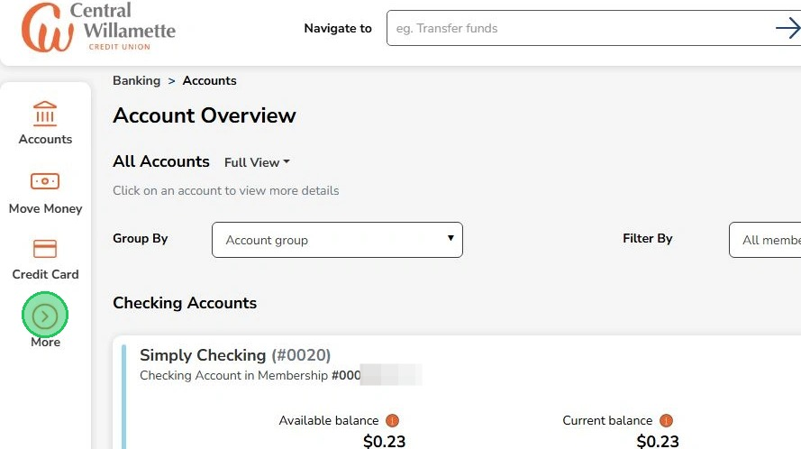
2
All alert options are in this section
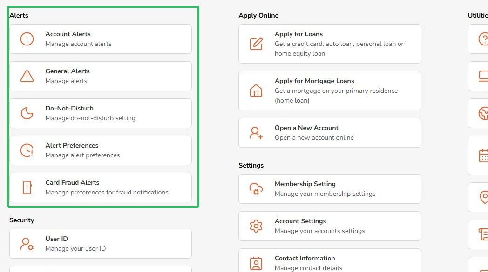
3
'Account alerts' is where you can set and manage alerts for balance changes, deposits, and withdrawals
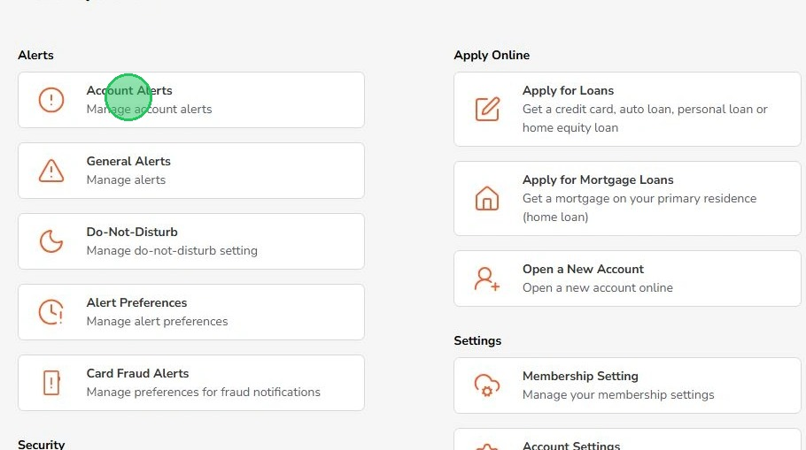
4
Click "Add a new alert" under the alert you want to set up
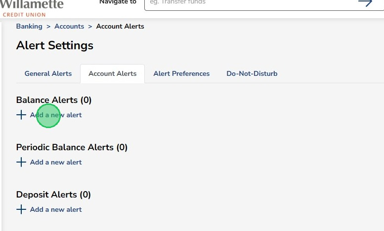
- Balance alerts let you know when your balance reaches a certain threshold
- Periodic Balance alerts will let you know what your balance is on a schedule
- Deposit Alerts notify you when you receive a deposit
- Withdrawal Alerts notify you when funds are taken out of your account
5
For Balance alerts, select an account
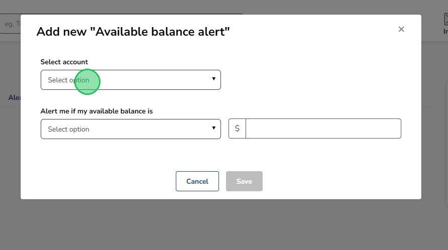
6
Select to be alerted when the balance is Greater Than or Less Than a certain amount
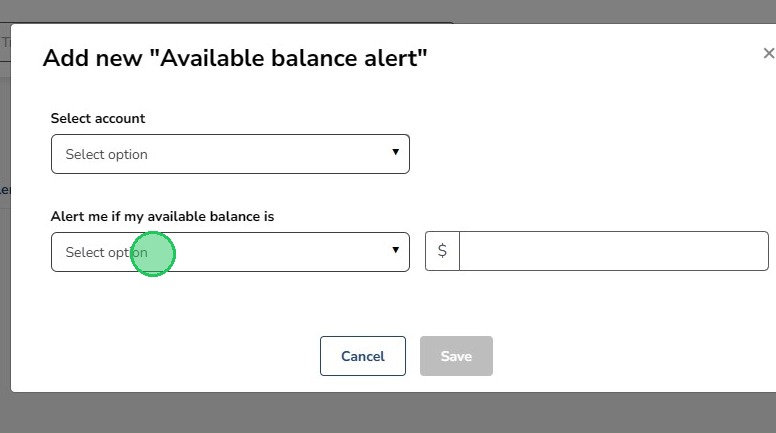
7
Type an amount and hit "Save"
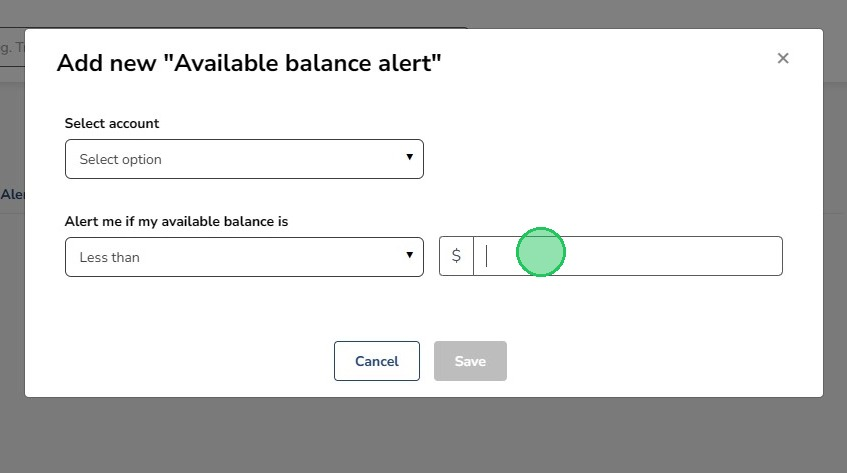
This particular alert will send you a notification when your Available Balance goes above or below the amount set
8
The text alerts will look like this
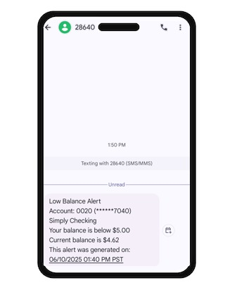
9
The email alerts will look like this
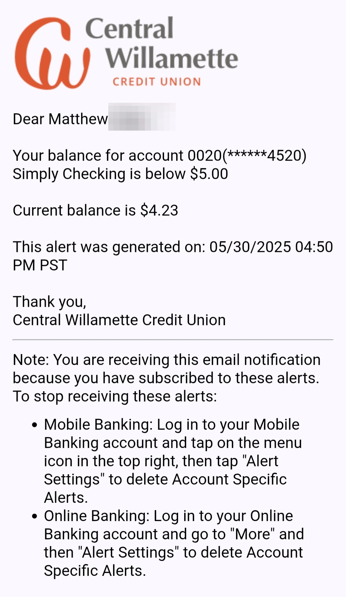
10
Mandatory Alerts are alerts that are automatically turned on and cannot be turned off
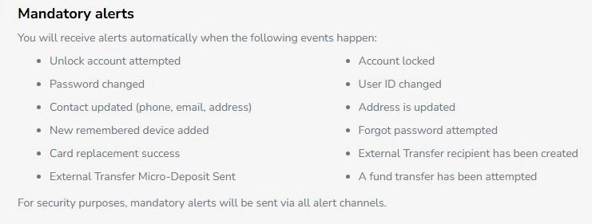
11
Alert Preferences lets you turn alerts on/off and choose how to receive alerts (push notification, SMS, email)
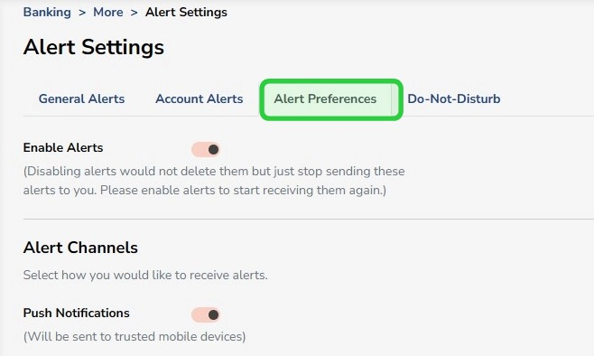
Push notifications appear on your phone if you have the mobile app. SMS means you’ll get the alert in a text message. Email alerts go to your email address.
12
Do-Not-Disturb lets you set times to mute alerts. Mandatory alerts will still be sent.
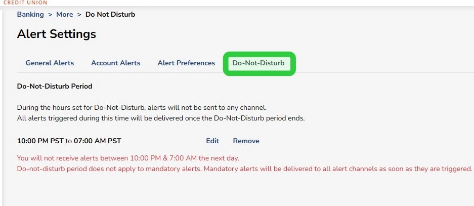
If you don’t receive alerts, check your contact information and notification settings, or contact support for help.